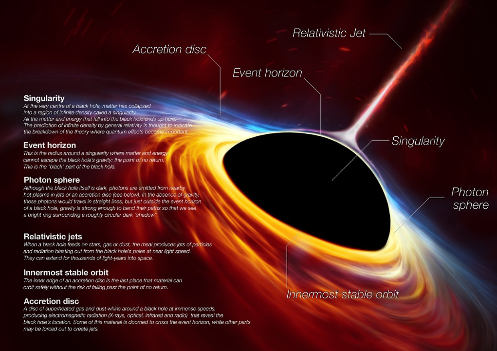
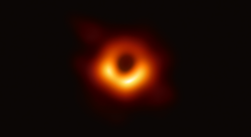

Consideration of black holes suggests, not only that God does play dice, but that he sometimes confuses us by throwing them where they can’t be seen.
One of the most mysterious and fascinating objects in space are Black Hole, which is the ultimate manifestation of a region of strong gravitational attraction that not even light can escape its grasp and time stands still. The black hole cannot be perceived with our normal brain power because we have never directly witnessed the existence of such a thing. In this episode of Cosmic Charade, we will discuss this mysterious entity of the universe.
Introducing Black Hole
The idea of the existence of a black hole was first proposed in the 18th century. This idea was proposed based on the only known gravitational laws. An English physician named John Michell published a paper in 1784 in the Philosophical Transactions of the Royal Society of London (Vol. 84, p. 35), with the rather rambling title ’On the Means of Discovering the Distance, Magnitude, etc. of the Fixed Stars, in Consequence of the Diminution of the velocity of the Light in the case of such a Diminution should be found to take place in any one of them, and such other Data should be Procured from Observations, as would be Further Necessary for that Purpose. In this paper, Michell discussed stars in general and speculated about the possibility of astronomical objects whose mass and radius satisfy the criteria for a black hole. Meanwhile, Michell wanted to explain that if an object has enough small size and mass enough, it is impossible for anything to escape its gravitational force. Even light can be stuck forever.
This same idea struck the French Mathematician Marquis de Laplace. He expressed the idea in his book ‘The System Of The World’. Laplace had carried out exhaustive research on Newtonian gravity and conceived of the notion of such an object in the year 1799. It is clear from his discussion that his concept implied the property of the escape speed exceeding the speed of light.’Escape speed’ is defined as the minimum speed with which a particle is to be ejected from the object in order that it never returns to the object. For the Earth, this speed works out as \(11.2\) kilometers per hour. Although Laplace or Michell did not use the term ‘black hole’ to describe these objects. Laplace’s work was based on the Newtonian theory of gravitation. Today when we discuss strong gravitational effects, we found that the Newtonian framework is questionable and we prefer to use Einstein’s general theory of relativity. It was Dr. John Archibald Wheeler, a visionary physicist who coined the term ‘Black Hole,’ at a conference in New York in 1967.
Albert Einstein first predicted the existence of black holes in 1916, with his general theory of relativity. Karl Schwarzschild developed the idea of black holes from relativity’s equations in 1916, just a year after Einstein published his theory. Schwarzschild’s solution identified a radius for any given mass, known as the Schwarzschild radius, where, if that mass could be compressed to fit within that radius, no known force or degeneracy pressure could stop it from continuing to collapse into a gravitational singularity or black hole. Thus, where the radius of the body is less than its Schwarzschild radius, everything, even photons of light, must inevitably fall into the central body. As a corollary, when the mass density of this central body exceeds a particular limit, it triggers a gravitational collapse to what is known as a Schwarzschild black hole, a non-charged, non-rotating black hole.
After decades of black holes being known only as theoretical objects. Around the 1930s J. Robert Oppenheimer, Volkoff and Snyder pondered the possibility of such objects in the universe. Later, these three scientists proved that, when a sufficiently competent star has lost all its fuel, it has no nuclear reaction to external pressure. As a result, the star begins to collapse under the influence of its own gravitational force. And this is how the idea of black holes was developed.
Structure of Black Hole
Black holes have three “layers”: the outer and inner event horizon, and the singularity. The event horizon of a black hole is the boundary around the mouth of the black hole, past which light cannot escape. Once a particle crosses the event horizon, it cannot leave. Gravity is constant across the event horizon. The inner region of a black hole, where the object’s mass lies, is known as its singularity, the single point in space-time where the mass of the black hole is concentrated. Scientists can’t see black holes the way they can see stars and other objects in space. Instead, astronomers must rely on detecting the radiation black holes emit as dust and gas are drawn into the dense creatures. But supermassive black holes, lying in the center of a galaxy, may become shrouded by the thick dust and gas around them, which can block the tell-tale emissions.

Types of Black Holes
There are three types of black holes: stellar black holes, super-massive black holes, and intermediate black holes.
Stellar Black Holes:
When a star burns through the last of its fuel, the object may collapse, or fall into itself. For smaller stars (those up to about three times the sun’s mass), the new core will become a neutron star or a white dwarf. But when a larger star collapses, it continues to compress and creates a stellar black hole.
Supermassive Black Holes:
Small black holes populate the universe, but their cousins, super-massive black holes, dominate. These enormous black holes are millions or even billions of times as massive as the sun but are about the same size in diameter. Such black holes are thought to lie at the center of pretty much every galaxy, including the Milky Way. Supermassive black holes may be the result of hundreds or thousands of tiny black holes that merge.
Intermediate Black Holes:
Scientists once thought that black holes came in only small and large sizes, but research has revealed the possibility that midsize, or intermediate, black holes (IMBHs) could exist. Such bodies could form when stars in a cluster collide in a chain reaction. Several of these IMBHs forming in the same region could then eventually fall together in the center of a galaxy and create a supermassive black hole. In 2014, astronomers found what appeared to be an intermediate-mass black hole in the arm of a spiral galaxy.
Black Hole Images
In 2019 the Event Horizon Telescope (EHT) collaboration released the first image ever recorded of a black hole. The EHT saw the black hole in the center of galaxy M87 while the telescope was examining the event horizon or the area past which nothing can escape from a black hole.
In 2021, astronomers revealed a new view of the giant black hole at the center of M87, showing what the colossal structure looks like in polarized light. As polarized light waves have a different orientation and brightness compared to unpolarized light, the new image shows the black hole in even more detail. Polarization is a signature of magnetic fields and the image makes it clear that the black hole’s ring is magnetized.

Reference:
Hubblesite: Black Holes—Gravity’s relentless pull interactive. Encyclopedia. STScl Home. Retrieved May 6, 2022.
NASA. Imagine the universe!
International Journal of Modern Physics D22(11):60008- DOI: 10.1142/S0218271813600080. September 2013.